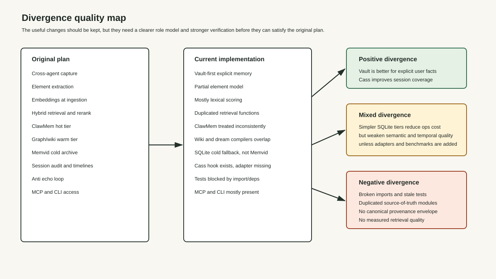
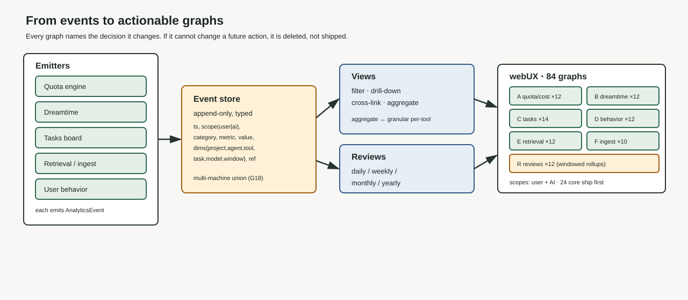
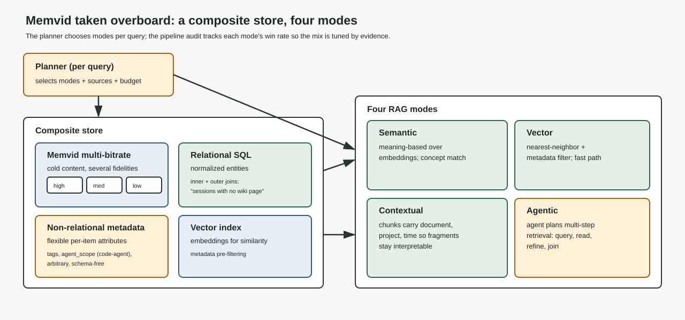
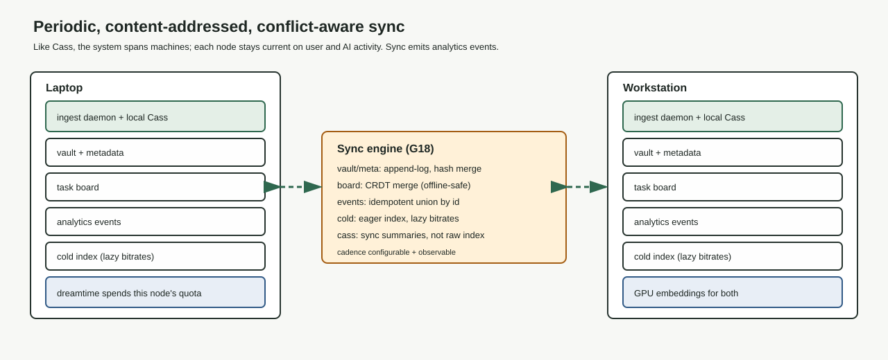
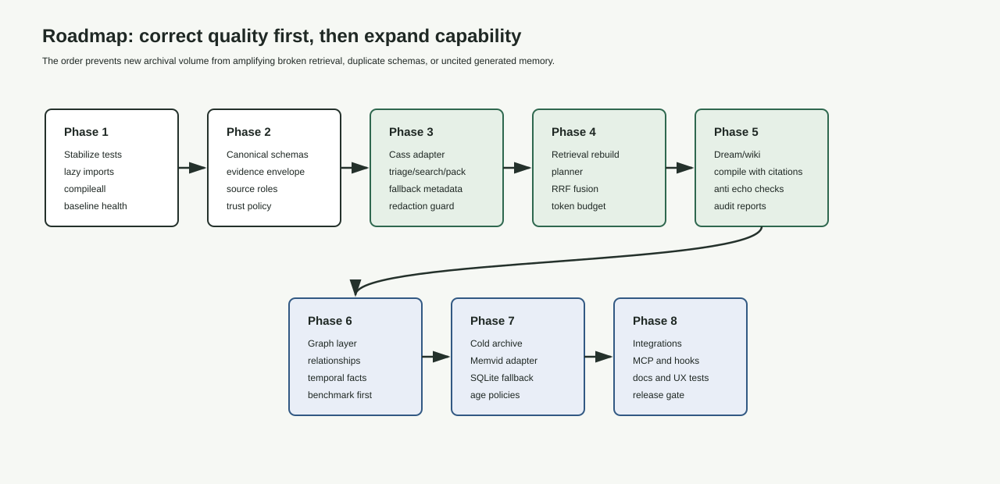

new-aaa-memory platform rebuild report
A quota-maximizing second brain.
This is a third-party-auditable rebuild plan for turning the aaa-memory lineage into one platform: a memory system that ingests every surface, a dreamtime engine that spends idle model quota refining your real work, an analytics webUX that becomes the primary audit surface for your AI usage, and a first-class task board that ties it all to what you are actually trying to ship. Memory is the substrate. The product is leverage on time and quota.
date: 2026-06-29
ver: 1.0.0
author: Claude Opus 4.8
status: platform synthesis
scope: ingest · dream · analyze · task
Executive verdict
Build the platform; keep memory as the substrate, not the product.
The first version of this document framed the work as a Cass realignment: integrate raw session search cleanly and stop there. That framing was too small. The real goal is a system that maximizes the value extracted from every model quota the user holds, audits all AI work in one place, and continuously improves the user's projects, wiki, and the system itself while the user sleeps. Memory and retrieval are necessary plumbing. They are not the point.
The point is four engines working on one substrate. Quota reads usage and provider config from the proxy and maximizes free-tier consumption every period. Dreamtime spends that otherwise-wasted quota refining tasks, documents, the wiki, and the system toward visible gold standards. Analytics turns all of this into 50-100 actionable graphs across user-facing and AI-facing scopes. Tasks give every project a living, cross-agent board that the other three engines read and write. Memory (hot-warm-cold, multi-RAG, Cass evidence) is what makes the four engines accurate.
The current implementation is too memory-intensive for Python ingest/recall hooks, has no analytics, has weak dreamtime, and is hard to install. Those four sentences are the entire mandate for this rebuild.
Keep
The durable vault, the MCP/CLI surfaces, the Cass hook prototype, local-first storage, the wiki/dream idea, and the Hermes-style plugin pattern. These are the right instincts.
Repair
Memory-heavy Python hooks, duplicate retrieval paths, weak provenance, missing analytics, a thin dreamtime loop, and a painful install. These are why the system is not yet usable under real time pressure.
Add
Quota/proxy integration, a real dreamtime DAG with gold standards, a 50-100 graph analytics webUX, a first-class task board, multi-bitrate RAG, a metadata schema for every tier, an embedding-provider matrix, and a --doctor-driven install.
The preferred execution path remains modify-existing, because the vault, CLI, MCP server, Hermes provider, OpenClaw plugin, and Cass prototype are real working surfaces. Greenfield stays alive as a clean contract reference and parity harness. The new constraint is that lightweight ingest/recall must move out of heavy Python hooks into a fast resident process, because hook memory cost is the single biggest reason the current system is not used daily.
Main goals of the revision
Eighteen goals, one platform.
These are the goals that re-centered this document, drawn directly from the revision brief. Every later section traces back to one or more of them. They are grouped by engine so the build sequence is legible, not because the engines are independent — they share one substrate and one task board.
Engine goals
G1 · Quota maximization
Interact with the user's task/Kanban system and their quota/usage manager to maximize quota use every period, especially free quotas. Read quota data and model/provider config from the proxy program.
G2 · Dreamtime compute
Spend excess quota across every installed tool (Claude Code, Codex, Antigravity, OpenCode, Kiro, Ollama Cloud, NVIDIA NIM, Groq, Cerebras) to complete and refine in-progress tasks and older documents, toward visible, interchangeable gold standards.
G3 · Analytics webUX
An overwhelming quantity of analytic data: 50-100 visual graphs, many interactive, tracking user behavior, project work, and daily/weekly/monthly/yearly reviews. The primary audit surface for a user's AI work, with user-facing and AI-facing scopes.
G4 · First-class tasks
A built-in Kanban-style cross-agent task and project board. Cass summaries link to each card as context. Living HTML spec files created before a project starts and used across its lifecycle. Optional third-party task-system bridges.
Data-plane goals
G5 · Metadata schema
A robust metadata schema that accompanies data through the hot-warm-cold pipeline, defined for every layer.
G6 · Ingestion & retrieval DAGs
Rigorously defined, structured ingestion and retrieval pipelines, described as DAGs and iterated across versions until the spec is rock solid, with analytics on efficiency.
G7 · Overboard RAG
Memvid RAG taken overboard: multiple bitrates, metadata in a non-relational DB, inner and outer joins on a relational SQL DB, and semantic, vector, contextual, and agentic RAG all implemented.
G8 · CLI retrieval
CLI-based retrieval instead of MCP, to permit specific retrieval of exactly the queried data rather than a fixed tool envelope.
G9 · Temporal search
Temporal search to unify disparate items that belong to the same project or idea but are not obviously related by subject — temporal usage correlation identifies the relationship.
G10 · Classifier-assisted
A classifier model plus scripted classification for both ingestion and retrieval.
G11 · Embedding matrix
Embedding model support for local (GPU-accelerated and CPU) and cloud systems (20+ providers, NVIDIA/AMD/Intel GPU), with a --doctor command to assist configuration.
G12 · Pipeline audit
A system that reviews ingestion and retrieval to determine whether both are as good as they can be — is the proper data being stored and retrieved or not.
Surface and integration goals
G13 · Cass, complementary
Integrate Cass as complementary forensic evidence, avoiding duplication of what it already does well.
G14 · Unified CLI
A simple, CLI-based interface that handles all surfaces: wiki, ClawMem, Memvid, dreamtime.
G15 · Wiki web UI
A first-class web interface for browsing the wiki, with many YAML-driven filters and a publishable method that puts documents online.
G16 · Intake skill
A dedicated document-intake skill (e.g. adding an Obsidian vault): decompose, tag, and attach YAML metadata to everything.
G17 · Preconfigured plugins
Preconfigured CLI plugins for all major surfaces (Claude Code, Codex, Pi, etc.), like the current Hermes integration, so installation is simple.
G18 · Multi-machine sync
Support for multiple machines, like Cass: periodic sync keeps every system current on user and AI activity.
The tricky parts, called out explicitly so the plan does not skim them: the refined dreamtime compute DAG, the ingestion and retrieval DAGs, the specific monitoring and analytics, and the metadata schema for all layers. Those four get the deepest treatment in this document.
Traceability: every section header below names the goals it satisfies, and the requirement matrix maps all eighteen goals to concrete files, acceptance gates, and tests so a third-party reviewer can confirm nothing was dropped.
System map · G1-G18
Four engines, one substrate, one task board.
Before any subsystem detail, here is how the whole platform fits together. Read top to bottom: surfaces feed ingestion, ingestion fills the tiered memory substrate, the four engines read and write that substrate and the task board, and everything emits telemetry into analytics. The task board is deliberately drawn at the center because it is the shared contract every engine reads.
flowchart TB
subgraph SRC["Surfaces (G16,G17)"]
A1[Claude Code / Codex / Pi / Gemini]:::s
A2[Obsidian vault intake]:::s
A3[Web AI transcripts]:::s
A4[Cass session archive]:::s
end
subgraph ING["Ingestion DAG (G6,G10)"]
I1[normalize -> classify -> chunk -> embed -> tag]:::p
end
subgraph MEM["Tiered memory substrate (G5,G7)"]
M1[(Hot: vault + resident index)]:::hot
M2[(Warm: wiki + SQL joins + NoSQL meta)]:::warm
M3[(Cold: Memvid multi-bitrate)]:::cold
end
subgraph ENG["Engines"]
E1{{Quota engine G1}}:::e
E2{{Dreamtime G2}}:::e
E3{{Analytics G3}}:::e
E4{{Retrieval G6,G8,G9}}:::e
end
TB[[Task & project board G4]]:::tb
PX[/Proxy: quota + model/provider config/]:::px
SRC --> ING --> MEM
PX --> E1
E1 --> TB
E2 <--> TB
E2 --> MEM
E4 --> MEM
TB --> E2
E2 --> E4
E1 -.spend.-> E2
MEM --> E3
E1 --> E3
E2 --> E3
TB --> E3
E3 --> WUX[(Analytics webUX: 50-100 graphs)]:::cold
classDef s fill:#101922,stroke:#2c463a,color:#cfe2ff;
classDef p fill:#121f1b,stroke:#284f3a,color:#dff9e8;
classDef hot fill:#1b1210,stroke:#5a3a30,color:#ffc3b4;
classDef warm fill:#1a160d,stroke:#5a4820,color:#ffe4a3;
classDef cold fill:#0d1622,stroke:#2f4a6a,color:#cfe2ff;
classDef e fill:#0e1c16,stroke:#284f3a,color:#7ee0a1;
classDef tb fill:#161024,stroke:#5a4820,color:#d6ba6e;
classDef px fill:#101922,stroke:#395c49,color:#8dbaf2;
Hot tier — fast, small, high-trust
Warm tier — curated, joinable
Cold tier — archival, multi-bitrate
Engine
The identity stays aaa-memory. Cass is one surface among several, not the spine. The proxy is the single source of truth for what quota exists and which models/providers are configured; the quota engine never hardcodes that. The board is where the user's intent lives, so dreamtime and analytics both read it: dreamtime to know what to improve, analytics to know what "done" means from both a user and an agent perspective.
Evidence ledger
What is verified, inferred, and opinionated.
This report separates observed facts from judgment calls, including the diagnosis that motivated the rebuild. Confusing these categories at this stage would create false confidence.
| Finding | Status | Evidence or rationale |
|---|
| Current ingest/recall hooks are too memory-intensive in Python. | stated requirement | Named directly in the revision brief as a primary defect; drives the move to a resident, low-memory ingest/recall process. |
| Current system has no analytics. | stated requirement | Named in the brief; G3 adds the 50-100 graph webUX as the primary audit surface. |
| Dreamtime is currently weak. | stated requirement | Named in the brief; G2 replaces the thin loop with a DAG, gold standards, surfaces, and budget control. |
| Install and setup are hard. | stated requirement | Named in the brief; G11/G17 add a --doctor and preconfigured per-surface plugins. |
| Cass is installed locally and version-managed. | verified prior | cass api-version --json previously returned crate 0.6.14; upstream listed v0.6.17. Plan retains a Cass update check. |
| Full Python test suite fails on eager optional-provider imports. | verified prior | pytest -q failed during collection because openai imported eagerly via classifier modules. Repaired in Phase 0 (ticket AD-01). |
| Quota maximization needs the proxy as source of truth. | opinion | Hardcoding model/provider lists would rot. The proxy already holds live quota and config, so the quota engine should read it rather than maintain a parallel registry. |
| Memvid alone is insufficient as the memory architecture. | opinion | Cold archival video-RAG is one tier. The brief asks for multi-bitrate plus SQL joins plus NoSQL metadata plus four RAG modes — a composite, not a single store. |
| Raw transcript text is evidence, not instruction. | opinion | Historical sessions contain stale commands and failed approaches; safe as cited evidence, unsafe as live fact. Preserved from the prior plan. |

Quota engine · G1
Spend the quota you already paid for — or that is free — before it resets to zero.
Every model surface the user holds carries a quota that resets on a clock: free daily tiers, monthly subscription allotments, burst credits. Unused quota at reset is value destroyed. The quota engine's job is to know, at every moment, how much of each quota remains, when it resets, and what useful work could consume it — then hand that budget to dreamtime so it gets spent on the user's real projects.
Source of truth: the proxy
The quota engine does not maintain its own model registry. It reads the proxy program that already brokers requests and holds live quota and model/provider configuration. The proxy is queried, never bypassed, and the engine never edits credential loading or the proxy chain — it is a read-only consumer of usage data plus a writer of "intended spend" hints.
@dataclass
class QuotaWindow:
provider: str # "claude-code", "codex", "groq", "cerebras", "ollama-cloud", ...
model: str
tier: Literal["free", "subscription", "credit", "burst"]
limit: int # tokens or requests in the period
used: int
remaining: int
resets_at: str # ISO 8601; when remaining returns to limit
reset_cadence: str # "daily" | "monthly" | "rolling-1h" | ...
unit: Literal["tokens", "requests"]
cost_per_unit: float # 0.0 for free tiers; used to rank "free first"
source: str # "proxy" always; never hardcoded
| Quota engine responsibility | Behavior | Why it matters |
|---|
| Poll | Read all QuotaWindows from the proxy on a short interval and on demand. | Dreamtime can only spend what it can see. |
| Rank | Order spendable quota free-first, then soonest-to-reset, then cheapest. | Free and about-to-expire quota is the value most easily lost. |
| Budget | Emit a per-window spend budget to dreamtime, reserving headroom for interactive user work. | Background work must never starve the user's foreground sessions. |
| Predict | Forecast reset-time waste from historical burn rate; flag windows likely to expire unused. | Turns "we have quota" into "we will waste X by 00:00 unless we act". |
| Account | Record actual spend per window, model, project, and task back to analytics. | Closes the loop: G3 graphs quota utilization and waste over time. |
Success metric for G1: a measurable target of ≥80% utilization of free and about-to-reset quota per period, while keeping p95 interactive latency within a configured budget of baseline (background work yields to foreground). This is a headline analytics graph with an explicit tradeoff, not an unfalsifiable "100% with zero impact" claim.
Assumption and fallback: not every provider exposes remaining/limit/reset telemetry — many free tiers do not. Where the proxy cannot supply authoritative quota, the engine estimates remaining headroom from local burn-rate accounting and marks the window inferred rather than authoritative, so dreamtime never over-commits against a guess. See the proxy contract.
The engine interacts with the task board (G4) so that "spendable budget" is matched to "work worth doing." A free Cerebras window resetting in two hours is paired with a backlog of refinement tasks sized to fit. The pairing — budget to work — is the handoff to dreamtime.
Dreamtime compute · G2 · tricky part
While you sleep, the system spends idle quota making your real work better.
Dreamtime (sleep-time compute) is the engine that consumes the budget the quota engine produces. Its purpose is not to generate filler — it is to advance the user's actual projects, wiki, vault, and the system itself toward explicit, visible gold standards, and to predict what the user will need next and prepare it before they ask. This is the deepest "tricky part," so it gets a full DAG, an object model, control surfaces, and a budget/observability contract.
The dreamtime DAG
Each cycle is a DAG, not a loop. It begins by acquiring budget, selects targets from four domains, runs improvement passes scored against gold standards, and only promotes work that measurably improved. Nothing is committed without a before/after quality delta and provenance.
flowchart TB
S([Activation window opens]):::st
B[Acquire budget from Quota engine G1]:::p
G[Load gold standards per domain
visible, interchangeable, topic-focused]:::p
SEL{Select targets}:::d
subgraph DOM["Four improvement domains"]
P[Projects: in-progress / future / completed]:::dom
W[Wiki: auto-generated, top-down selection]:::dom
V[User vault: papers, articles, metadata]:::dom
Z[Self: skills / plugins / hooks / scripts / agents / CLAUDE.md]:::dom
end
PLAN[Plan pass: pick model+harness+reasoning per budget]:::p
WORK[Improvement pass: draft -> critique -> revise]:::p
SCORE{Score vs gold standard}:::d
PROMOTE[Promote: write back + provenance + analytics]:::ok
DISCARD[Discard / re-queue with notes]:::no
PRED[Predict next user need -> pre-stage artifact]:::p
E([Window closes or budget exhausted]):::st
S --> B --> G --> SEL
SEL --> P & W & V & Z
P & W & V & Z --> PLAN --> WORK --> SCORE
SCORE -- improved --> PROMOTE --> PRED
SCORE -- not improved --> DISCARD --> SEL
PROMOTE --> SEL
PRED --> E
B -. exhausted .-> E
classDef st fill:#0e1c16,stroke:#7ee0a1,color:#7ee0a1;
classDef p fill:#121f1b,stroke:#284f3a,color:#dff9e8;
classDef d fill:#161024,stroke:#5a4820,color:#d6ba6e;
classDef dom fill:#101922,stroke:#2c463a,color:#cfe2ff;
classDef ok fill:#0e1c16,stroke:#7ee0a1,color:#b8ffd0;
classDef no fill:#1b1210,stroke:#5a3a30,color:#ffc3b4;
What dreamtime works on
Projects
In-progress: complete and refine open tasks pulled from the board. Future: build out latent plans. Completed: polish and re-verify. Example chains: refine a doc into a publishable paper; refine a plan into a PRD and then build the PRD; identify a latent plan inside a document and build it from a linked YouTube transcript.
Wiki
Auto-generated knowledge, improved top-down: "improve this document and all of its children." The user selects subtrees; dreamtime distills, cites, and de-duplicates.
User vault
User-curated, human-written content: publishable papers, article refinement, metadata enhancement. Dreamtime assists, never overwrites without provenance and a quality delta.
Self-improvement
The system's own skills, plugins, hooks, scripts, agents, and CLAUDE.md. Idle quota hardens the tool that produced it.
Gold standards: the iteration target
Improvement is meaningless without a target. Each domain carries one or more gold standards — exemplar documents or rubrics that define "excellent" for that topic. They are visible to the user, interchangeable (swap the rubric, change the direction of refinement), and topic-focused. A scoring pass compares the candidate to the active gold standard and only promotes a measurable improvement.
@dataclass
class DreamCycle:
cycle_id: str
window: QuotaWindow # which quota it is spending
domain: Literal["project", "wiki", "vault", "self"]
target_ref: str # task id, wiki path, vault doc, or system path
gold_standard_ref: str # active rubric / exemplar
model: str # chosen per budget, configurable
harness: str # claude-code | codex | antigravity | opencode | ...
reasoning_level: str # configurable
token_budget: int
quality_before: float
quality_after: float
promoted: bool
provenance: list[str] # evidence + prior versions
started_at: str
ended_at: str
User-controllable surfaces
| Surface | Control | Goal tie |
|---|
| Behavior prompt | A system-prompt-like field that steers dreamtime's style and priorities. | G2 |
| Date range | Restrict project-improvement to a window (e.g. "only docs touched this quarter"). | G2 |
| Project selection | A page listing projects; the user checks which are eligible for auto-improvement. | G2,G4 |
| Wiki selection | Top-down subtree selection: pick a document and include all children. | G2,G15 |
| Gold standards | View and swap the exemplar/rubric per topic. | G2 |
| Schedule | Settable activation hours and duration of dreamtime per day. | G2 |
| Model & harness | Configurable model, harness, and reasoning level, optionally per domain. | G2,G11 |
| Budgets | Token budgets and target quota-usage percentages per window. | G1,G2 |
Monitoring, history, and prediction
Dreamtime keeps a full history of past activity: every DreamCycle with its token spend, quota-usage percentage, quality delta, model, and outcome. This feeds G3 directly — the analytics surface answers "what did the autonomous agent get done last night, and was it worth the quota?" from both the AI scope (cycles, tokens, promotions) and the user scope (which of my documents got better). The prediction stage forecasts user needs from board and behavior signals and pre-stages artifacts so they exist before the user asks for them (see story 12).
Definition of done for G2: a configured user can leave the machine overnight and wake to a) measurably improved real artifacts (positive gold-standard delta past threshold), b) ≥80% utilization of free/expiring quota, c) a readable log of exactly what changed, why, at what cost, and d) best-effort pre-staged artifacts — tracked by a prediction hit-rate, accepting that many pre-staged drafts go unused and are budget-capped.
Analytics & webUX · G3 · tricky part
The primary audit surface for a user's AI work.
Analytics is not a dashboard bolted on at the end. It is the product surface where the user understands what their AI did, what they did, what it cost, and what to change. The brief asks for an overwhelming quantity — 50-100 visual graphs, many interactive. The discipline that keeps that from becoming noise is one rule: every graph must be actionable. If a chart cannot change a future decision by the user or the agent, it does not ship.
Two scopes for everything
Each analytic category is rendered twice: a user scope (what did I get done; what are my habits) and an ai scope (what did the autonomous agent get done; how did each tool behave). AI work is viewed both as a whole and as granular, tool-specific behavior — "the agent" in aggregate, and "Codex on project X at 02:14" in detail.
Behavior & habits
user When you work, how long, which tools, which projects, focus vs context-switching, prompt patterns.
Project & work status
user ai Velocity, throughput, blocked time, board flow, completion vs creation, aging.
Quota & cost
user ai Utilization, waste at reset, free-tier capture, spend by model/project/task.
Dreamtime output
ai Cycles, promotions, quality deltas, cost per improvement, predictions that landed.
Memory & retrieval
ai Recall quality, source mix, latency, citation coverage, pipeline-audit verdicts.
Reviews
user ai Daily, weekly, monthly, yearly rollups for every category above.
Data model and interactivity
Every engine emits append-only events (typed, timestamped, with project/agent/task/quota dimensions) into an analytics store. Graphs are views over those events. Interactivity means filterable (by date range, project, agent, tool, scope), drill-downable (aggregate to granular), and cross-linked (a quota-waste spike links to the dreamtime cycles that should have consumed it). Reviews are the same views windowed to day/week/month/year.
@dataclass
class AnalyticsEvent:
ts: str # ISO 8601
scope: Literal["user", "ai"]
category: str # "quota" | "dreamtime" | "task" | "retrieval" | "ingest" | "behavior"
metric: str # e.g. "quota.remaining_pct"
value: float
dims: dict # {project, agent, tool, task_id, model, window, gold_standard}
ref: str | None # link target for drill-down
The actionability test, applied to every catalog entry below: name the decision it changes. "Quota waste by window" changes which windows dreamtime targets tonight. "Retrieval source mix" changes which adapter to tune. A graph with no decision attached is deleted, not shipped.

Graph catalog · G3
The full catalog: 84 graphs, each with the decision it changes.
This is the complete enumeration the brief asked for. Each entry names the graph, its scope, and — in green — the action it is meant to change. Built in three tiers: ship the 17 marked core first, then the rest. Counts per group are shown so coverage is auditable.
A · Quota & cost — 12 graphs (G1,G3)
A01 coreQuota utilization % by windowuser→ set tonight's dreamtime targets
A02 coreProjected waste at next resetuser→ trigger pre-reset burst
A03Free-tier capture rateuser→ add/remove free providers
A04Spend by modelai→ rebalance model mix
A05Spend by projectuser→ reprioritize budget
A06Spend by task typeai→ cap expensive task classes
A07 coreCost per promoted improvementai→ tune dreamtime model choice
A08Burn rate vs reset clockai→ reschedule activation hours
A09Interactive vs background splituser→ adjust reserved headroom
A10Provider reliability vs spendai→ drop flaky providers
A11Quota heatmap (hour x provider)ai→ align work to free hours
A12Cumulative value reclaimeduser→ decide whether to keep paying for it
B · Dreamtime output — 12 graphs (G2,G3)
B01 coreCycles run per nightai→ widen/narrow target set
B02 corePromotion rate (promoted/total)ai→ raise/lower gold-standard bar
B03 coreQuality delta distributionai→ retire low-yield domains
B04Improvements by domainai→ rebalance domain weights
B05Tokens per improvement by modelai→ pick cheaper model
B06Discard reasons breakdownai→ fix recurring failure mode
B07 corePredictions made vs usedai→ trust/tune prediction stage
B08Docs advanced to publishableuser→ queue next candidates
B09Plans built into PRDsuser→ approve/redirect builds
B10Self-improvement changesai→ review system edits
B11Gold-standard driftuser→ refresh exemplars
B12Idle-window fill rateai→ add backlog if starved
C · Projects, tasks & flow — 14 graphs (G3,G4)
C01 coreBoard flow (cumulative)user→ spot WIP overload
C02 coreCycle time per stageuser→ attack the slow stage
C03Throughput per weekuser→ set realistic commitments
C04 coreAging WIP / stale cardsuser→ kill or revive zombies
C05Created vs completeduser→ stop overcommitting
C06Blocked time per carduser→ remove blockers
C07Human vs agent contributionai→ delegate more/less
C08Project completion forecastuser→ reset deadlines
C09Tasks touched by dreamtimeai→ confirm night coverage
C10Rework rateuser→ improve specs upfront
C11Project portfolio heatmapuser→ rebalance attention
C12Spec-to-ship lead timeuser→ tighten the pipeline
C13Abandoned-work detectoruser→ recover or archive
C14Effort vs outcome scatteruser→ drop low-ROI projects
D · Behavior & habits — 12 graphs (G3)
D01 coreActive hours heatmapuser→ align dreamtime to off-hours
D02Tool usage shareuser→ consolidate toolset
D03Context-switch frequencyuser→ batch similar work
D04Session length distributionuser→ plan deep-work blocks
D05Prompt pattern clustersuser→ build reusable prompts
D06Repeated-question detectorai→ write a wiki page
D07Topic focus over timeuser→ refocus effort on the drifting topic
D08Day-of-week productivityuser→ schedule hard work well
D09Idle-streak detectoruser→ let dreamtime take over
D10Cross-project correlationuser→ merge related efforts
D11Interruption recovery timeuser→ protect focus windows
D12Habit streaksuser→ sustain good routines
E · Memory & retrieval quality — 12 graphs (G6,G7,G12)
E01 coreRecall quality on golden queriesai→ tune planner weights
E02 coreSource mix per answerai→ fix over/under-used source
E03Retrieval latency P50/P95ai→ cache or demote a source
E04 coreCitation coverageai→ block uncited promotion
E05RAG mode win rateai→ reweight semantic/agentic
E06Embedding provider qualityai→ switch embedder
E07Stale-evidence rateai→ refresh ingestion
E08Contradiction frequencyai→ resolve in wiki
E09Temporal-correlation hitsai→ trust temporal links
E10Cache hit rate by tierai→ resize hot tier
E11Token cost per answerai→ tighten context packing
E12Pipeline-audit verdict trendai→ act on audit findings
F · Ingestion & knowledge growth — 10 graphs (G6,G10,G15)
F01 coreIngest throughput by surfaceai→ scale a slow connector
F02Classifier confidence histogramai→ retrain low-confidence classes
F03Dedup ratioai→ tune dedup threshold
F04Metadata completenessai→ backfill missing tags
F05Tier distribution (hot/warm/cold)ai→ tune promotion rules
F06Wiki page growthuser→ prune or expand topics
F07Orphan / uncited pagesuser→ link or delete
F08Intake backloguser→ schedule a dreamtime intake
F09Ingest failures by sourceai→ fix a broken parser
F10Compression ratio by bitrateai→ tune cold-tier bitrate
G · Reviews (windowed rollups) — 12 graphs (G3)
R01 coreDaily digestuserai→ plan the day
R02 coreWeekly retrouser→ adjust the week
R03Monthly reviewuser→ reprioritize portfolio
R04Yearly reviewuser→ set annual direction
R05Daily AI activity logai→ audit overnight work
R06Weekly quota reclaimuser→ tune budgets
R07Monthly cost trenduser→ renegotiate plans
R08Quarterly project burndownuser→ cut scope
R09Yearly knowledge growthuser→ plan publishing
R10Weekly habit scorecarduser→ fix one habit
R11Monthly model effectivenessai→ rotate models
R12Year-over-year leverageuser→ set next year's leverage targets
Total: 84 graphs across seven groups (A12, B12, C14, D12, E12, F10, R12). 17 marked core ship in tier 1. The catalog scales past 100 as per-tool granular variants (per-agent clones of E and B groups) are generated automatically from the same event store — no new code, only new dims filters.
Task & project system · G4
A first-class, cross-agent board that every engine reads.
The task system is not a satellite feature; it is the shared contract. The quota engine pairs budget to cards, dreamtime pulls cards to improve, analytics measures flow, and retrieval attaches Cass evidence summaries to each card as context. It is a built-in Kanban-style board spanning agents and projects, with living spec files as the project's spine.
Board model
Backlog
Refine intake parser · dream-eligible
Latent plan: yt-transcript build
In progress
PRD: analytics webUX · agent+user
Review
Paper draft v3 · vs gold std
| Element | Behavior | Read by |
|---|
| Card | A unit of work with project, agent(s), state, priority, budget hint, and dream-eligibility. | Quota, Dreamtime, Analytics |
| Cass context | Each card links a Cass evidence summary — relevant past sessions across tools — refreshed on open. | Retrieval, Dreamtime |
| Living spec file | An HTML, visual spec created before the project starts and updated across its lifecycle (this very document is the pattern). | User, Dreamtime |
| Cross-agent | Claude Code, Codex, Pi, and dreamtime all read/write the same board, so no tool owns its own private list. | All engines |
| Third-party bridge | Optional adapters to external task systems (Hermes and others) so the board can mirror or absorb them. | Sync (G18) |
@dataclass
class TaskCard:
id: str
project: str
title: str
state: Literal["backlog", "in_progress", "review", "done", "abandoned"]
owners: list[str] # agents and/or "user"
priority: int
budget_hint: int | None # tokens dreamtime may spend refining it
dream_eligible: bool
gold_standard_ref: str | None
spec_ref: str | None # living HTML spec
cass_context_ref: str | None # evidence summary
created_at: str
updated_at: str
blocked_by: list[str]
Living spec files matter because they make a project legible from day one and give dreamtime a target document to advance. The board is the bridge between "what the user wants" and "what idle quota should do about it" — which is why it sits at the center of the system map.
Ingestion DAG · G6,G10 · tricky part
Every surface becomes normalized, classified, tagged evidence.
Ingestion is a DAG, defined precisely because it is one of the four tricky parts and because the current Python hooks are too memory-heavy. The fix is structural: ingestion runs as a resident, batched, back-pressured pipeline — not a synchronous hook that loads the world on every keystroke. Each stage has a contract and emits efficiency telemetry (F-group graphs).
flowchart LR
SRC[/Source connector
cc / codex / pi / obsidian / web / cass/]:::s
RAW[(Immutable raw store)]:::hot
NORM[Normalize
to canonical record]:::p
DEDUP{Dedup
content hash}:::d
CLS[Classify
model + scripted rules G10]:::p
CHK[Chunk
structure-aware]:::p
EMB[Embed
provider from matrix G11]:::p
TAG[Tag + YAML metadata G5,G16]:::p
ROUTE{Tier router}:::d
H[(Hot: vault/index)]:::hot
W[(Warm: wiki/SQL/NoSQL)]:::warm
C[(Cold: Memvid bitrates)]:::cold
TEL[/Efficiency telemetry -> analytics F-group/]:::tel
SRC --> RAW --> NORM --> DEDUP
DEDUP -- new --> CLS --> CHK --> EMB --> TAG --> ROUTE
DEDUP -- dup --> TEL
ROUTE --> H & W & C
CLS -.confidence.-> TEL
EMB -.latency.-> TEL
ROUTE -.distribution.-> TEL
classDef s fill:#101922,stroke:#2c463a,color:#cfe2ff;
classDef p fill:#121f1b,stroke:#284f3a,color:#dff9e8;
classDef d fill:#161024,stroke:#5a4820,color:#d6ba6e;
classDef hot fill:#1b1210,stroke:#5a3a30,color:#ffc3b4;
classDef warm fill:#1a160d,stroke:#5a4820,color:#ffe4a3;
classDef cold fill:#0d1622,stroke:#2f4a6a,color:#cfe2ff;
classDef tel fill:#0e1c16,stroke:#284f3a,color:#7ee0a1;
| Stage | Contract | Efficiency metric |
|---|
| Connector | Pulls from one surface; never blocks the user's foreground tool. Resident, not per-keystroke. | throughput by surface (F01) |
| Raw store | Immutable raw inputs kept verbatim for re-processing and provenance. | raw bytes retained |
| Normalize | Map to one canonical record (text, actor, timestamps, refs). | normalize errors |
| Dedup | Content-hash; drop or link duplicates. | dedup ratio (F03) |
| Classify | Classifier model + scripted rules assign type, topic, sensitivity. | confidence histogram (F02) |
| Chunk | Structure-aware splitting (code blocks, headings, turns). | chunk size dist. |
| Embed | Vector via the configured provider (G11); batched. | embed latency |
| Tag | Attach the full metadata schema (G5) as YAML. | metadata completeness (F04) |
| Tier router | Route to hot/warm/cold by rules; promotable later. | tier distribution (F05) |
Iterate to rock solid: this DAG is versioned. v1 ships connectors + normalize + dedup + tier routing. v2 adds the classifier and structure-aware chunking. v3 adds agentic enrichment. The
test strategy gates each version on golden-ingest fixtures, so "rock solid" is a measured claim.
Retrieval DAG · G6,G8,G9,G12 · tricky part
Plan the query, pick the sources, fuse, pack, cite.
Retrieval is the second DAG. It is CLI-first (G8): a command can request exactly the data it needs rather than going through a fixed MCP envelope, which matters when an agent wants a specific slice and nothing else. The planner chooses sources and RAG modes per query, normalizes every result into one envelope, fuses, packs to a token budget, and always carries provenance.
flowchart TB
Q[/Query via CLI G8 or MCP/]:::s
PLAN[Planner: classify intent G10
choose sources + RAG modes]:::p
subgraph SRC["Sources -> EvidenceItem"]
VA[Vault: explicit memory]:::hot
WI[Wiki: compiled summary]:::warm
CM[ClawMem: local hot retrieval]:::hot
CA[Cass: historical transcript G13]:::warm
GR[Graph: temporal + relational G9]:::warm
CO[Cold: Memvid bitrates]:::cold
end
TMP[Temporal correlation G9
unify by usage time]:::p
FUSE[Fuse: RRF + rerank]:::p
PACK[Pack to token budget]:::p
CITE[Attach provenance + freshness]:::ok
AUD[/Pipeline audit G12:
was the right data retrieved?/]:::tel
OUT([Answer context]):::st
Q --> PLAN --> VA & WI & CM & CA & GR & CO
VA & WI & CM & CA & GR & CO --> TMP --> FUSE --> PACK --> CITE --> OUT
CITE --> AUD
AUD -.feedback.-> PLAN
classDef s fill:#101922,stroke:#2c463a,color:#cfe2ff;
classDef p fill:#121f1b,stroke:#284f3a,color:#dff9e8;
classDef hot fill:#1b1210,stroke:#5a3a30,color:#ffc3b4;
classDef warm fill:#1a160d,stroke:#5a4820,color:#ffe4a3;
classDef cold fill:#0d1622,stroke:#2f4a6a,color:#cfe2ff;
classDef ok fill:#0e1c16,stroke:#7ee0a1,color:#b8ffd0;
classDef tel fill:#0e1c16,stroke:#284f3a,color:#7ee0a1;
classDef st fill:#0e1c16,stroke:#7ee0a1,color:#7ee0a1;
CLI-first retrieval (G8)
The real differentiator is composability, not "shape": both the CLI and MCP are thin clients over the same retrieval daemon socket, so there is no per-query process spawn. The CLI adds pipeability — "only graph facts about project X since June, as JSON" piped into another tool. Contract split: aaa get --json emits raw source rows for precise slicing; normalized recall emits fused EvidenceItem with provenance. Both honor a stated contract; neither is ambiguous.
Temporal search (G9)
Some items belong to the same effort but share no vocabulary. Temporal usage correlation — "these three files and that transcript were all touched in the same 40-minute window" — links them. This complements Cass rather than duplicating its lexical/semantic search.
Pipeline audit (G12)
A standing auditor reviews both ingestion and retrieval: is the proper data being stored and retrieved? It replays golden queries, checks citation coverage and source mix, and flags when a source is over- or under-used. Its verdict trend is graph E12, and it feeds corrections back into the planner. This is how "as good as it can be" becomes a measured, improving number rather than a hope.
RAG architecture · G7
Memvid taken overboard: multi-bitrate, multi-store, four RAG modes.
The brief asks for the RAG schema to be deliberately excessive. That is correct for a cold archive that must stay cheap while remaining richly queryable. The architecture is a composite: Memvid encodes cold content at multiple bitrates, a non-relational DB holds metadata, a relational SQL DB supports inner and outer joins, and four RAG modes run over the lot.

| Component | Role | Why overboard helps |
|---|
| Memvid multi-bitrate | Cold content encoded at several fidelities; high bitrate for likely-needed, low for deep archive. | Cheap storage at scale without losing the ability to pull a faithful copy when needed. |
| Non-relational metadata | Flexible per-item metadata (tags, agent flags like code-agent, arbitrary attributes). | Schema-free attributes evolve without migrations; supports agent-specific memory (future goal). |
| Relational SQL | Normalized entities (project, session, agent, doc) with inner/outer joins. | Exact relational queries: "every session for project X with no resulting wiki page" (outer join). |
| Vector index | Embeddings for similarity. | Semantic recall. |
Four RAG modes
Vector
Pure approximate-nearest-neighbor over embeddings with metadata pre-filtering; the fast path, query embedded as-is.
Semantic
Vector search plus query transformation — expansion / HyDE rewrite before the ANN lookup — for conceptual recall when the query wording differs from the stored text. (A fifth mode, lexical, is the BM25/Cass fallback used when embeddings are unavailable.)
Contextual
Chunks carry surrounding context (document, project, time) so retrieved fragments stay interpretable.
Agentic
An agent plans multi-step retrieval — query, read, refine query, join — for hard questions a single shot misses.
The planner (retrieval DAG) chooses which modes to run per query and the audit (G12) tracks each mode's win rate (graph E05) so the mix is tuned by evidence, not assumption. Bitrate selection is itself a tuned parameter (graph F10).
Embedding providers · G11
Local or cloud, GPU or CPU, with a doctor to make it boot.
Embedding support must be broad and self-diagnosing, because "hard to install" is one of the four named defects. The system detects available accelerators, supports local and cloud providers behind one interface, and ships a --doctor command that inspects the machine and recommends a working configuration.
| Class | Examples | Selection |
|---|
| Local GPU | NVIDIA (CUDA), AMD (ROCm), Intel (oneAPI/XPU). | Auto-detected by --doctor; fastest local path. |
| Local CPU | GGUF / ONNX small models (e.g. all-MiniLM). | Fallback when no GPU; always available. |
| Cloud (20+) | OpenAI, Cohere, Voyage, Jina, Mistral, Gemini, Bedrock, Together, Fireworks, DeepInfra, OpenRouter, NVIDIA NIM, and more. | Behavior-driven adapter; config from proxy where applicable. |
class EmbeddingProvider(Protocol):
name: str
dim: int
device: Literal["cuda","rocm","xpu","cpu","cloud"]
def embed(self, texts: list[str]) -> list[list[float]]: ...
def health(self) -> dict: ... # used by --doctor
# aaa-memory doctor
# detects: GPU vendor/driver, VRAM, installed runtimes, reachable cloud keys
# recommends: a provider that will actually run on THIS machine
# verifies: a round-trip embed before declaring success
One interface means the embedder is swappable, and graph E06 tracks each provider's downstream retrieval quality so the choice is evidence-based. The doctor pattern extends beyond embeddings: it is the same diagnostic surface that checks Cass, the proxy connection, cron, and tier stores during install (see operations).
Cass integration · G13
Complementary forensic evidence, refreshed and cited — never duplicated.
Cass already solves raw cross-tool session search well. The integration rule is therefore restraint: use Cass for what it is good at — finding and packing raw coding-agent sessions across many tools — and do not rebuild that with bespoke parsers. Cass enters the retrieval DAG as one source producing historical_transcript evidence, and its summaries attach to task cards as context.
Cass is installed and kept fresh as part of normal setup: install, triage, initial index, then a cron refresh. The retrieval layer reads Cass health metadata because cron reduces but does not eliminate staleness, and any lexical-only fallback must show in provenance. Crucially, Cass is evidence, not durable memory — historical transcript text holds stale commands and failed approaches; safe to cite, unsafe as live instruction.

| Use Cass for | Do NOT use Cass for |
|---|
| Raw session search across cc/codex/pi/gemini and more. | Source of truth for user intent or preferences (that is the vault). |
| Forensic "what actually happened" evidence with citations. | Durable compiled knowledge (that is the wiki). |
| Seeding task-card context from past work. | Live instruction — transcripts are not current commands. |
| Temporal anchoring of when work occurred (feeds G9). | Re-implementing its index inside aaa-memory. |
Avoid duplication: temporal search (G9) uses Cass timestamps to correlate items rather than building a second transcript store. Where Cass already answers a question, aaa-memory routes to it instead of indexing the same bytes twice.
Document intake skill · G16
Point it at a vault; get back decomposed, tagged, YAML-rich memory.
A dedicated skill handles bulk document intake — the canonical case is adding an Obsidian vault. It decomposes documents into chunks, classifies and tags them, and attaches the full metadata schema as YAML, so external knowledge enters the same pipeline as everything else rather than sitting in a corner.
DiscoverWalk the source tree, respect ignore rules, detect formats (md, pdf, docx), and read existing front-matter.
DecomposeStructure-aware split into sections/blocks; preserve wikilinks and headings as relationships.
ClassifyAssign item_type, topics, and sensitivity via the classifier (G10); flag secrets for redaction.
TagWrite YAML metadata (G5) for every item; backfill missing fields the source lacked.
RouteSend to tiers; user content lands in the vault domain so dreamtime treats it as curated, not auto-generated.
The skill is idempotent and incremental: re-running it ingests only changed files (by content hash) and updates metadata in place. It is also a dreamtime entrypoint — "intake backlog" (graph F08) can trigger an overnight intake when the user drops a large vault.
Unified CLI surface · G8,G14,G17
One simple CLI across wiki, ClawMem, Memvid, and dreamtime.
All surfaces are reachable from one CLI, because a memory system that only works through one agent or one hidden hook fails. The CLI is the human operator surface and the precise-retrieval surface (G8), and it is what the preconfigured per-tool plugins call (G17), so every surface agrees on results.
# memory ops (route through the same planner as MCP + hooks)
aaa save "<fact>" --project X --source claude-code
aaa recall "<query>" --limit 6 --json
aaa inject --query "<task>" --limit 6
# precise, source-specific retrieval (G8)
aaa get --source graph --project X --since 2026-06-01 --json
aaa get --source cass --query "<phrase>" --robot
# surfaces (G14)
aaa wiki browse|compile|publish <path>
aaa clawmem search "<query>"
aaa memvid pull <id> --bitrate high
aaa dream status|run|history|gold-standards
# system
aaa doctor # G11 diagnostics
aaa intake ~/obsidian-vault # G16
aaa sync # G18
aaa analytics serve # G3 webUX
Preconfigured plugins (G17)
Installation is simple because each major surface ships a ready plugin, the way Hermes is integrated today: Claude Code, Codex, Pi, and others get a drop-in config that wires the CLI's recall/inject into that tool's hook or command system. No per-tool hand-assembly. The plugins call the unified CLI, so adding a surface is a config file, not a new retrieval path.
Wiki & publishing · G15
A first-class web interface, YAML-filtered, with a publish button.
The wiki is the durable, human-readable knowledge tier, and it deserves a real browsing experience. The web interface is first-class: fast navigation, full-text and metadata search, and many filters driven by the YAML metadata every page carries. A publishing method turns selected pages into online documents.
Browse
Tree and graph navigation over compiled pages; backlinks and citations are first-class. The same living-spec HTML aesthetic as this document.
Filter
Many filters from YAML: by project, topic, item_type, agent, date range, review_state, sensitivity. Filters compose; saved filters become views.
Publish
Select a page or subtree; render to a shareable, online-publishable document. Respects sensitivity so secrets never publish.
Compiled pages always cite their evidence (the anti-echo-loop rule: generated summaries cannot become self-proving facts). Dreamtime improves the wiki top-down via subtree selection (G2), and the publish path is the bridge from private knowledge to publishable papers — one of dreamtime's headline jobs.
Multi-machine sync · G18
Every machine stays current on user and AI activity.
Like Cass, the system spans machines. Periodic sync keeps each node current on both user activity and AI activity, so memory, tasks, and analytics are coherent wherever the user works. Sync is content-addressed and conflict-aware, not a naive last-writer-wins copy.

| What syncs | Strategy |
|---|
| Vault & metadata | Append-only event log merged by content hash; explicit conflict resolution for the rare true conflict. |
| Task board | CRDT-style merge on cards so two machines can edit the board offline. |
| Analytics events | Union of append-only event streams; idempotent by event id. |
| Cold archive | Lazy: pull bitrates on demand; sync only the metadata index eagerly. |
| Cass | Each machine runs its own Cass; aaa-memory syncs the derived summaries, not raw indexes. |
Sync cadence is configurable and observable (it emits analytics events). The model deliberately mirrors Cass's multi-machine posture so the two systems feel consistent to operate.
Data contracts
The contracts every engine must honor.
A platform with four engines on one substrate only stays coherent if the boundaries are contracts, not conventions. These are the load-bearing types. Each is small, testable, and shared across CLI, MCP, hooks, and dreamtime so no two surfaces can disagree.
| Contract | Guarantee | Owner |
|---|
EvidenceItem | Every source normalizes to one shape before ranking; carries source, type, citation, freshness, confidence, token_cost. | Retrieval |
MemoryMeta | Every stored item carries the full metadata schema (G5) across all tiers. | Ingestion |
QuotaWindow | Quota is always read from the proxy, never hardcoded; spend is always accounted. | Quota |
DreamCycle | No write-back without a quality delta and provenance. | Dreamtime |
TaskCard | One cross-agent board; all engines read the same cards. | Tasks |
AnalyticsEvent | Append-only, typed, dimensioned; every engine emits it. | Analytics |
Provenance is mandatory
Every answer context lists which source produced each item, its citation, and its freshness. A compiled summary that cannot cite real evidence cannot be promoted (anti echo loop).
Plans are inspectable
A query plan can be printed: intent, chosen sources, RAG modes, and budget. Operators and the G12 auditor can see why a result appeared.
Evidence is not memory
Historical transcripts (Cass) are historical_transcript evidence; explicit user facts are explicit_user_memory. The system never silently upgrades one to the other.
Spend is observable
Every token dreamtime spends is attributed to a window, model, project, and card, and lands in analytics. No silent background spend.
Interfaces & rigor specs
The four under-specified mechanisms, pinned down.
Adversarial review flagged that several confident "what" statements lacked an implementable "how." This section closes the four highest-signal gaps so proxy_client, the ingest daemon, dreamtime scoring, and temporal correlation can actually be built and tested.
1. Proxy API contract (G1)
The quota engine reads the proxy over a local HTTP endpoint (default http://127.0.0.1:<port>/quota; the reference implementation targets a LiteLLM-style broker, but any source returning the shape below works). Auth is a local token from config. The client maps the raw response field-by-field onto QuotaWindow; missing fields degrade gracefully.
# GET /quota -> 200
{ "windows": [
{ "provider":"groq", "model":"llama-3.3-70b", "tier":"free",
"limit":14400, "used":2310, "remaining":12090, # remaining/limit OPTIONAL
"resets_at":"2026-07-01T00:00:00Z", "reset_cadence":"daily",
"unit":"requests", "cost_per_unit":0.0 } ] }
# Degradation rules (no field invented):
# remaining missing -> estimate = limit - local_burn_since_reset; mark inferred=true
# resets_at missing -> use reset_cadence heuristic; mark inferred=true
# provider absent -> excluded from spend ranking, logged
2. Resident ingest/recall daemon IPC (fixes the primary defect)
Hooks become thin clients of one resident daemon over a Unix domain socket ($XDG_RUNTIME_DIR/aaa-memory.sock; local TCP fallback on platforms without it). Newline-delimited JSON requests; the daemon owns all models and indexes so per-keystroke hook cost is a socket write, not a model load.
| Aspect | Spec |
|---|
| Message | {op:"ingest|recall|inject", payload, req_id} → {req_id, ok, data|error}. |
| Lifecycle | Lazy-start on first client; systemd/launchd unit for autostart; restart re-reads durable state (no in-RAM-only truth). |
| Back-pressure | Bounded queue; when full, ingest returns busy and the client buffers to the immutable raw store for later drain — never blocks the foreground tool. |
| Budgets | Two gates: thin client RSS < 50MB and daemon steady-state RSS < a configured ceiling (default 512MB), both asserted in tests. |
| Classifier in hot path | Default is scripted rules (cheap); the classifier model is optional, batched, and runs as a deferred enrichment pass, not inline per item — keeping the daemon within budget. |
3. Gold-standard scoring function (G2 gate)
Promotion depends on a numeric quality delta, so the scorer is specified, and treated as heuristic rather than ground truth.
def score(candidate, gold_standard_ref) -> float: # 0..1
# LLM-judge with a fixed rubric per domain; rubric dimensions are
# weighted and averaged. Deterministic checks (lint, tests, link
# validity, citation coverage) contribute where applicable.
...
# Promotion rule:
# promote iff score_after - score_before >= DELTA_MIN (default 0.05)
# AND score_after >= FLOOR (default 0.6)
# Caveats (review-driven):
# - LLM self-scoring is noisy/gameable -> require the margin, not just ">",
# - periodic human spot-audit of a promoted sample,
# - track scorer reliability (agreement with audits) as its own metric (graph B-series).
4. Temporal correlation algorithm (G9)
"Touched in the same window" is made precise: every ingested item records a usage_at timestamp per surface event (open/edit/run/query). Items are bucketed into adaptive sessions — a new bucket starts after a gap > SESSION_GAP (default 30 min) of no activity. A temporal link is emitted between two items co-occurring in ≥ K buckets (default 2), scored by co-occurrence frequency and inverse bucket size, above LINK_MIN. This complements Cass (which supplies the raw event timestamps) rather than re-indexing transcripts.
Inline rigor caveats
Memvid bitrate for text
"Bitrate" = retained fidelity of a chunk's reconstruction (full text → summarized → pointer-only). High-bitrate is lossless; low is lossy and must be re-fetchable from the immutable raw store. Justify Memvid vs zstd+parquet+SQLite per a recall/cost benchmark before committing (open decision).
Embedding migration
Vectors are tagged with embedder@dim@version. Switching providers (different dim) triggers a background reindex; queries during migration run against the old index until the new one passes parity, then cut over.
Offline mermaid
This document's mermaid loads from a CDN, which breaks air-gapped viewing. Production: vendor mermaid locally with a pinned version + SRI hash, CDN as fallback only. Tracked in open decisions.
Security, privacy & data lifecycle
Access, secrets, and the right to be forgotten.
Review found no security model and no deletion story for a system that ingests everything and serves a web UI exposing all of it. Both are specified here; neither is optional for a tool holding a user's complete AI history.
Security model
| Surface | Control |
|---|
| Analytics webUX / wiki web | Bound to localhost by default; remote access requires an auth token and TLS. No anonymous access to behavioral data. |
| At rest | Vault, cold archive, and the event store encrypted at rest (key from OS keychain); raw store permissions locked to the user. |
| Sync transport (G18) | Authenticated + encrypted channel between machines; summaries only for Cass, never raw indexes. |
| Secret detection | The sensitivity field is set by layered detection: regex (keys/tokens), entropy heuristics, and the classifier. Detected secrets are redacted before embedding and never published (BP6). |
| Publish path (G15) | Publishing re-checks sensitivity; secret and internal items are blocked from public output regardless of page selection. |
Data lifecycle: retention, deletion, forgetting
The "immutable raw store" and append-only logs are immutable for integrity, not forever. A deletion is a first-class operation that tombstones an item and propagates.
| Mechanism | Behavior |
|---|
| Forget | aaa forget <id|query> writes a tombstone event; the item is removed from vault, vector index, SQL/NoSQL, and Memvid, and the tombstone replicates via sync so it cannot resurrect on another machine. |
| Retention / TTL | Per-tier policy: hot keeps recent + pinned; warm retains compiled knowledge; cold TTL + eviction caps unbounded Memvid growth. Policies are configurable and auditable. |
| Deprecation | review_state:deprecated hides an item from retrieval but keeps it for audit until TTL eviction. |
| Raw store | Tombstoned raw inputs are purged on the next compaction; integrity hashes cover only live items. |
Multi-store consistency
One item spans Memvid + SQL + NoSQL + vector. Writes use the immutable raw store as the durable source of truth: a write is acknowledged once raw + metadata are committed; derived stores (vector, SQL projections, Memvid) are rebuilt idempotently from raw, so any store can be dropped and reconstructed. aaa doctor --rebuild performs that recovery. This makes cross-store atomicity unnecessary — raw is authoritative, the rest are caches.
Target architecture
Normalize everything; let the planner decide.
The architectural keystone is the evidence envelope plus a planner that chooses sources per query. Without normalization, each source returns different shapes and the answer depends on accidental implementation details. With it, sources are pluggable and the planner is the single place ranking policy lives.

@dataclass
class EvidenceItem:
id: str
source: Literal["vault","cass","wiki","clawmem","graph","cold","web","obsidian"]
evidence_type: Literal[
"explicit_user_memory","historical_transcript","compiled_summary",
"document_fragment","graph_fact","archive_fragment",
]
title: str
excerpt: str
citation: str
project: str | None
agent: str | None
session_id: str | None
score: float
freshness: str | None
retrieval_mode: str # semantic | vector | contextual | agentic | lexical
confidence: float
token_cost: int
warnings: list[str]
Cass results enter as historical_transcript, vault as explicit_user_memory, wiki as compiled_summary with citations, graph facts cite the evidence that created the edge. The planner classifies intent, selects sources and RAG modes, normalizes to EvidenceItem, fuses (RRF + rerank), and packs to budget. This is the same planner the CLI, MCP, and hooks all call.
Deep component audit
Each subsystem: purpose, current state, required change.
Written for a third-party engineer who has not read the repo. Each component is judged by how much it helps the quality of the final answer the user receives and the leverage the platform delivers.
| Component | Purpose | Current state | Required change |
|---|
User CLI (mem.py → aaa) | Operator + precise-retrieval surface. | Healthiest part; direct save/recall/inject. | Route all multi-source recall through the canonical planner; add precise get (G8). |
| Vault | Explicit, high-trust memory. | SQLite-backed; works. | Keep; becomes the hot-tier explicit store with full MemoryMeta. |
| Ingest/recall hooks | Capture + inject per surface. | Too memory-intensive in Python. | Move to a resident, batched process; hooks become thin clients (top defect fix). |
| MCP server | Agent retrieval surface. | Exists. | Wrap the same planner; CLI becomes primary for precise retrieval. |
| Retrieval pipeline | Plan, fuse, pack. | Duplicated fusion/intent paths. | Consolidate to one planner + envelope; add temporal (G9) and audit (G12). |
| Cass hook | Session evidence. | Bounded prototype with tests. | Promote to first-class source adapter (G13). |
| Wiki / dream | Curated knowledge + improvement. | Two overlapping compilers; thin dream loop. | One compiler; real dreamtime DAG (G2); web UI + publish (G15). |
| Graph layer | Relationships + temporal. | Kuzu-oriented, needs hardening. | Stabilize after evidence quality; back temporal search. |
| Cold archive | Long-range storage. | SQLite fallback, not Memvid. | Multi-bitrate Memvid behind an adapter (G7). |
| Quota / proxy | Maximize quota use. | Absent. | Build the quota engine reading the proxy (G1). |
| Analytics | Audit surface. | Absent. | Build event store + webUX + 84 graphs (G3). |
| Tasks | Cross-agent board. | Absent. | Build the board + living specs (G4). |
Divergence dossier
Where the build drifted from intent — and whether the drift helps.
Each divergence is judged by result quality and by fit to the re-centered platform goals, not by loyalty to an old diagram.
| Divergence | Verdict | Action |
|---|
| Vault-first instead of ClawMem-first hot tier | helpful | Keep; explicit facts deserve a small high-trust home. |
| Cass introduced after the original plan | helpful | Keep as complementary evidence (G13). |
| Cass cron refresh in setup | helpful | Keep; extend the doctor to verify it. |
| SQLite cold fallback instead of Memvid | harmful for G7 | Replace with multi-bitrate Memvid behind an adapter. |
| Graph layer postponed | acceptable | Sequence after evidence quality; needed for G9. |
| Multiple compilers / fusion helpers | harmful | Consolidate to one planner + one compiler. |
| Optional provider packages imported at import time | harmful | Lazy imports; fixed in Phase 0 / AD-01 (breaks tests today). |
| Parser stubs left incomplete | harmful | Prefer Cass over bespoke parsers; finish only what Cass cannot supply. |
Implementation spec
Narrow, testable, contract-driven modules.
The next implementation should grow the existing package along contract lines. New modules are small and each ships with tests. Names are concrete so the file tree and task list below are unambiguous.
| Module | Responsibility | Goal |
|---|
aaa_memory.quota.proxy_client | Read QuotaWindows from the proxy; rank; emit budgets. | G1 |
aaa_memory.dream.engine | Run the dreamtime DAG; score vs gold standards; promote. | G2 |
aaa_memory.dream.gold | Load/swap gold standards per domain. | G2 |
aaa_memory.analytics.events / .views / .web | Event store, view queries, webUX server. | G3 |
aaa_memory.tasks.board | Cross-agent board + living spec links. | G4 |
aaa_memory.ingest.pipeline | Resident ingestion DAG. | G6,G10 |
aaa_memory.retrieval.planner / .fusion / .context_pack | Plan, fuse, pack. | G6,G8 |
aaa_memory.retrieval.sources.cass | Cass source adapter -> EvidenceItem. | G13 |
aaa_memory.retrieval.temporal | Temporal correlation. | G9 |
aaa_memory.rag.memvid / .stores | Multi-bitrate Memvid + SQL/NoSQL stores; four RAG modes. | G7 |
aaa_memory.meta.schema | The MemoryMeta schema + migrations. | G5 |
aaa_memory.embed.providers | Embedding provider matrix + health. | G11 |
aaa_memory.audit.pipeline_audit | Ingest/retrieval quality auditor. | G12 |
aaa_memory.ops.doctor / .cass_setup / .sync | Diagnostics, Cass setup, multi-machine sync. | G11,G13,G18 |
aaa_memory.intake.skill | Bulk document intake (Obsidian). | G16 |
aaa_memory.wiki.compiler / .web | One compiler + web UI + publish. | G15 |
plugins/{claude-code,codex,pi,...} | Preconfigured per-surface plugins. | G17 |
Backwards compatibility: scripts/mem.py stays as a thin alias for aaa during migration; the MCP tool names are preserved while their internals route through the new planner.
Roadmap
Stabilize, then build engines, then build leverage.
Quality gates come before intelligence. The sequence fixes the foundation (tests, resident ingest, metadata, retrieval contract), then stands up the four engines, then layers the leverage features.

Phase 0Restore test health, lazy imports, resident ingest/recall daemon, and a minimal aaa doctor + one-command install. The "stop being unusable" phase fixes all three usability defects (memory, tests, install) at once — the full provider matrix and plugins still land later.
Phase 1Metadata schema (G5), evidence envelope, one planner + fusion, CLI get (G8). The substrate.
Phase 2Cass adapter (G13), temporal (G9), multi-bitrate RAG (G7), embedding matrix + doctor (G11). The data plane.
Phase 3Quota engine (G1) + task board (G4) + dreamtime DAG (G2). The leverage core.
Phase 4Analytics event store + webUX + 84 graphs (G3); wiki web UI + publish (G15); intake skill (G16).
Phase 5Multi-machine sync (G18), preconfigured plugins (G17), pipeline audit (G12), hardening.
Implementation task list & file tree
Item by item, for both pathways, with the tree it produces.
The brief asks for an item-by-item task list for adaptation and greenfield builds, plus a file tree. Here is both. Tickets are sized to a single focused change; each names its acceptance gate.
Adaptation pathway (modify-existing) — ordered tickets
AD-01Make all optional providers lazy-import; restore pytest -q to green.
gate: tests pass
AD-02Extract ingest/recall into a resident daemon; hooks become thin IPC clients.
gate: hook RSS < 50MB
AD-03Define MemoryMeta; add migration; backfill existing vault rows.
gate: 100% rows tagged
AD-04Add EvidenceItem; make vault + wiki return it.
gate: envelope tests
AD-05Consolidate fusion/intent into retrieval.planner; delete duplicates.
gate: one planner only
AD-06Add CLI aaa get --source ... --json (G8).
gate: precise-get tests
AD-07Promote Cass hook to sources.cass adapter; wire health + cron.
gate: cass golden queries
AD-08Add retrieval.temporal correlation (G9).
gate: temporal recall test
AD-09Replace SQLite cold fallback with rag.memvid multi-bitrate.
gate: pull@bitrate parity
AD-10Add SQL + NoSQL stores; four RAG modes selectable by planner (G7).
gate: mode win-rate logged
AD-11Build embed.providers matrix + aaa doctor (G11).
gate: doctor green on CPU
AD-12Build quota.proxy_client: read windows, rank, budget (G1).
gate: utilization metric live
AD-13Build tasks.board + living specs + Cass context (G4).
gate: cross-agent edit test
AD-14Build dream.engine DAG + dream.gold + surfaces (G2).
gate: promote-on-delta test
AD-15Build analytics events/views/web; ship 17 core graphs (G3).
gate: every graph has an action
AD-16One wiki.compiler + web UI + publish (G15).
gate: cited pages only
AD-17Build intake.skill for Obsidian (G16).
gate: idempotent re-run
AD-18Build ops.sync multi-machine (G18) + per-surface plugins (G17).
gate: two-node merge test
AD-19Build audit.pipeline_audit standing auditor (G12).
gate: verdict trend graph
AD-20Backfill remaining 60 analytics graphs; harden; docs.
gate: 84 graphs live
Greenfield pathway — deltas from adaptation
GF-01Scaffold clean package per the reference tree; contracts first, no legacy.
gate: contracts compile
GF-02Port golden fixtures from the existing repo as the parity oracle.
gate: fixtures imported
GF-03Implement all subsystems directly against contracts (no consolidation step).
gate: per-WP gates
GF-04Run the comparison harness vs the modified repo on golden queries.
gate: parity ≥ baseline
GF-05Cut over only if parity holds and ops cost is lower; else keep adaptation.
gate: go/no-go signed
Target file tree
aaa-memory/
├── aaa_memory/
│ ├── __init__.py
│ ├── cli.py # `aaa` unified CLI (G8,G14)
│ ├── meta/
│ │ ├── schema.py # MemoryMeta (G5)
│ │ └── migrations/
│ ├── ingest/
│ │ ├── pipeline.py # resident ingestion DAG (G6)
│ │ ├── connectors/ # cc, codex, pi, gemini, web, obsidian, cass
│ │ ├── classify.py # classifier + scripted rules (G10)
│ │ └── daemon.py # low-memory resident process (fixes top defect)
│ ├── retrieval/
│ │ ├── planner.py # one planner (G6)
│ │ ├── fusion.py # RRF + rerank
│ │ ├── context_pack.py
│ │ ├── temporal.py # temporal correlation (G9)
│ │ ├── models.py # EvidenceItem
│ │ └── sources/ # vault, wiki, clawmem, cass (G13), graph, cold
│ ├── rag/
│ │ ├── memvid.py # multi-bitrate cold (G7)
│ │ ├── stores.py # SQL (joins) + NoSQL (metadata)
│ │ └── modes.py # semantic | vector | contextual | agentic | lexical(fallback)
│ ├── embed/
│ │ └── providers.py # local GPU/CPU + 20+ cloud (G11)
│ ├── quota/
│ │ └── proxy_client.py # read proxy, rank, budget, account (G1)
│ ├── dream/
│ │ ├── engine.py # dreamtime DAG (G2)
│ │ ├── gold.py # gold standards
│ │ └── predict.py # pre-stage next need
│ ├── tasks/
│ │ └── board.py # cross-agent kanban + living specs (G4)
│ ├── analytics/
│ │ ├── events.py # AnalyticsEvent store (G3)
│ │ ├── views.py # 84-graph view queries
│ │ └── web.py # webUX server
│ ├── wiki/
│ │ ├── compiler.py # one compiler (G15)
│ │ └── web.py # browse/filter/publish
│ ├── intake/
│ │ └── skill.py # Obsidian intake (G16)
│ ├── audit/
│ │ └── pipeline_audit.py # ingest/retrieval auditor (G12)
│ ├── ops/
│ │ ├── doctor.py # diagnostics (G11)
│ │ ├── cass_setup.py # install + cron (G13)
│ │ └── sync.py # multi-machine (G18)
│ └── mcp.py # MCP wraps the planner
├── plugins/ # preconfigured per-surface (G17)
│ ├── claude-code/ ├── codex/ ├── pi/ └── ...
├── scripts/
│ └── mem.py # thin alias -> aaa (compat)
├── webux/ # analytics + wiki front-end assets
├── tests/
│ ├── golden/ # golden queries + ingest fixtures
│ └── ...
├── specs/ # living HTML spec files (this doc's pattern)
└── pyproject.toml
Rationale
Why this plan is better — and when it is not.
The planned architecture beats the current implementation only if the contracts are enforced. Stated honestly so a reviewer can hold the build accountable.
Why it is better
It fixes the four named defects head-on: resident ingest removes the memory cost, analytics removes the blindness, the dreamtime DAG turns idle quota into real output, and the doctor + plugins remove install pain. Contracts make the four engines composable instead of tangled.
When it would not be
If the team ships engines before stabilizing the substrate (skipping Phase 0-1), the platform inherits today's fragility at larger scale. If analytics graphs ship without an attached decision, the "overwhelming quantity" becomes noise. If dreamtime promotes without a quality delta, it manufactures plausible drift.
Recommended execution: modify-existing through Phase 4, keep greenfield as a parity harness, and only cut over to greenfield if stabilizing the existing repo proves more expensive than rebuilding — measured, not assumed.
Open decisions
Judgments the operator should confirm.
These are choices, not hidden facts. Each has a recommended default.
| Decision | Options | Recommended default |
|---|
| Diagram pipeline | Diffusion raster vs SVG/mermaid. | SVG + mermaid (labels stay crisp; no headless image-gen CLI available locally). |
| NoSQL store | Mongo-style doc DB vs embedded (e.g. SQLite JSON1). | Start embedded for single-machine; pluggable for scale. |
| Graph engine | Kuzu vs SQLite-backed edges. | Defer hard dependency until temporal/graph quality is proven. |
| Analytics front-end | Server-rendered vs SPA. | Lightweight SPA over the event API; static export for sharing. |
| Dreamtime model default | Cheapest-free vs best-available. | Free-first per quota ranking; user-overridable per domain. |
| Third-party task bridge | Hermes-first vs generic adapter. | Generic adapter; Hermes as the first implementation. |
Operations
Maintainable by an operator, not only the builder.
Runbooks for install, refresh, health, and incidents. The unifying tool is aaa doctor, which checks every dependency and prints a fix.
Install runbook
pipx install aaa-memory # or pip install -e .
aaa doctor # detect GPU/CPU, proxy, cass, cron, stores; recommend config
aaa ingest daemon --install # resident low-memory ingest/recall
aaa ops cass --setup # install cass + triage + index + cron
aaa plugins install claude-code codex pi # preconfigured surfaces (G17)
aaa analytics serve # open the webUX
Routine + incidents
| Situation | Signal | Action |
|---|
| Daily health | aaa doctor | All green before relying on overnight dreamtime. |
| Cass missing | doctor flags adapter | Retrieval degrades gracefully; run aaa ops cass --setup. |
| Cass stale | health metadata | Provenance marks staleness; cron re-index; manual cass index. |
| Quota source down | proxy unreachable | Dreamtime pauses (no budget) rather than guessing; alert. |
| Dreamtime overspend | budget breach | Hard cap halts cycles; analytics flags the window. |
| Ingest daemon RSS high | memory graph | Back-pressure batch size; restart daemon (state is durable). |
Test strategy
Measure answer quality and leverage, not only code paths.
Tests are layered from boundaries up to acceptance stories, with golden fixtures as the oracle for both ingestion and retrieval.
| Layer | What it proves |
|---|
| Import/boundary | No eager optional imports; CLI/MCP/hook import cleanly. |
| Resident daemon | Ingest/recall under a memory ceiling; back-pressure works. |
| Contracts | MemoryMeta, EvidenceItem, QuotaWindow, DreamCycle round-trip and validate. |
| Source adapters | Cass/vault/wiki/graph/cold each emit valid envelopes; Cass health honored. |
| Planner/fusion | Golden queries return expected source mix and citations. |
| RAG modes | Each mode runs; win-rate logged; bitrate pull parity. |
| Dreamtime | Promotes only on positive quality delta; respects budget + schedule. |
| Analytics | Every shipped graph maps to an event metric and a named action. |
| Acceptance stories | All 12 user stories pass as automated scenarios. |
Golden queries are the spine: a fixed set of questions with expected sources, citations, and freshness. The pipeline audit (G12) replays them continuously, so "as good as it can be" is a tracked number (graph E01/E12).
Path choice & pathway notes
Modify by default; greenfield as the measured alternative.
The build sequence lives in the roadmap (phases) and the task list (AD/GF tickets); this section records only the modify-vs-greenfield decision and the details unique to each pathway.
| Criterion | Favors modify | Favors greenfield |
|---|
| Working surfaces | Vault, CLI, MCP, Hermes, Cass prototype already exist. | — |
| Coupling debt | Manageable once fusion is consolidated. | If duplication proves structural and pervasive. |
| Speed to value | Phase 0-1 unblocks daily use fast. | — |
| Long-term cleanliness | — | Contracts-first with no legacy. |
| Ops cost | Lower now. | Only if modified ops cost stays high after stabilization. |
Decision rule: proceed modify-existing; keep the greenfield scaffold and comparison harness alive; cut over only if the parity harness shows greenfield matching behavior at lower ops cost.
Modify-existing (default)
First-pass files: ingest/daemon.py, meta/schema.py, retrieval/planner.py, retrieval/models.py, cli.py get. Gated on green tests + the golden-query oracle. Rollback: backup + per-ticket flags. Risks: hidden fusion coupling, daemon state durability, proxy-contract drift.
Greenfield (parity harness)
Contracts before implementations, no legacy; build the target file tree directly; import the golden fixtures as oracle. Comparison harness runs both builds on golden queries (source mix, citations, latency, token cost). Cut over only on parity ≥ baseline AND lower ops cost. Risks: re-implementation drift, effort duplication, premature cutover.
Rollback & done: every migration step sits behind a flag or thin alias (revert = config change + backup). Definition of done: the 12 stories pass, the 17 core graphs are live, dreamtime promotes on delta, and aaa doctor is green on a clean machine.
Requirement matrix
All eighteen goals mapped to files, gates, and tests.
This is the third-party audit table: every goal from the brief, where it lives, how it is gated, and which story proves it. If a row has no file and no test, the goal is not done.
| Goal | Primary module(s) | Acceptance gate | Story |
|---|
| G1 Quota max | quota.proxy_client | utilization % live; free-first ranking | S1 |
| G2 Dreamtime | dream.engine/.gold/.predict | promote-on-delta; budget+schedule honored | S4,S12 |
| G3 Analytics | analytics.events/.views/.web | 17 core then 84 graphs; each has an action | S11 |
| G4 Tasks | tasks.board | cross-agent edit; living spec; cass context | S9 |
| G5 Metadata | meta.schema | 100% items tagged across tiers | S8 |
| G6 Pipelines | ingest.pipeline, retrieval.planner | DAG versions gated on golden fixtures | S2,S5 |
| G7 RAG overboard | rag.memvid/.stores/.modes | bitrate parity; 4 modes; SQL joins | S8 |
| G8 CLI retrieval | cli.get | precise source-specific JSON get | S7 |
| G9 Temporal | retrieval.temporal | temporal recall test passes | S5 |
| G10 Classifier | ingest.classify | confidence histogram; rules+model | S2 |
| G11 Embeddings | embed.providers, ops.doctor | doctor green on CPU + one GPU | S10 |
| G12 Pipeline audit | audit.pipeline_audit | verdict trend; feedback to planner | S11 |
| G13 Cass | retrieval.sources.cass | cass golden queries; no duplication | S6 |
| G14 Unified CLI | cli | wiki/clawmem/memvid/dream subcommands | S7 |
| G15 Wiki web | wiki.compiler/.web | YAML filters; cited; publish | S4 |
| G16 Intake | intake.skill | idempotent Obsidian intake | S3 |
| G17 Plugins | plugins/* | drop-in install per surface | S10 |
| G18 Multi-machine | ops.sync | two-node merge; no data loss | S10 |
Engineering blueprints
Concrete behavior the next implementation should build.
Edge-case behavior, stated so a reviewer can check it. These extend the original retrieval blueprints with the platform's new surfaces.
BP1 · No quota
If every window is exhausted, dreamtime idles and logs "no budget" rather than spending paid quota silently.
BP2 · No evidence
Retrieval returns an explicit "no supporting evidence" envelope, never a fabricated citation.
BP3 · Stale evidence
Cass staleness is surfaced in provenance; the planner can down-weight but must not hide it.
BP4 · Contradiction
Conflicting evidence is shown side by side with sources; the wiki resolves it, the retriever does not.
BP5 · No improvement
A dreamtime cycle with non-positive delta discards or re-queues; it never writes back regression.
BP6 · Secret in intake
Sensitivity classification redacts secrets; redacted items never publish (G15) and never embed raw.
BP7 · Two machines edit a card
CRDT merge resolves; if a true conflict, both versions are preserved and flagged.
BP8 · Proxy schema changes
Behavior-driven adapter detects shape from the response and caches it; hardcoded exceptions are last resort.
BP9 · Large evidence set
Context packing respects the token budget; overflow is summarized with citations, not truncated blindly.
BP10 · Generated summary
Compiled summaries are marked compiled_summary and cannot become self-proving facts.
BP11 · Agent-specific memory
agent_scope filters retrieval so a sales agent sees product data, a dev agent sees code (future-ready).
BP12 · Doctor on bare machine
On no-GPU, no-keys, doctor still finds a working CPU embedder and declares a green minimal config.
User stories
Twelve stories that become acceptance tests.
These are the refined user stories from the brief. Each is an end-to-end scenario the finished platform must satisfy, and each maps to goals and to a test in the strategy above.
Spend my remaining quota on dreamtime
"I have free Cerebras and Groq windows that reset at midnight. Use them."
The quota engine sees the windows, ranks them free-first and soonest-to-reset, sizes a budget, and hands it to dreamtime, which pulls dream-eligible cards and refines them until the windows drain. By morning, utilization is near 100% with zero impact on the user's daytime sessions.
Intake from Claude Code and Pi
"Everything I do in Claude Code and Pi should just be remembered."
Preconfigured plugins feed the resident ingest daemon. Sessions normalize, classify, chunk, embed, and tag without bogging the foreground tool. The user never thinks about it; recall later just works.
Intake my Obsidian vault
"Pull in my whole vault, tagged and searchable."
aaa intake ~/obsidian-vault decomposes every note, preserves wikilinks as relationships, classifies and writes YAML metadata, and routes content to the vault domain. Re-running ingests only what changed.
Dreamtime advances real work
"Turn my rough doc into a paper, my plan into a built PRD, and find the latent plan hiding in my notes."
Overnight, dreamtime refines a document toward the publishable-paper gold standard, turns a plan into a PRD and builds it, identifies a latent plan inside a document, and fleshes it out using a linked YouTube transcript — each promoted only on a measured quality gain, each cited.
Recall data
"What did we decide about the analytics schema, and what was related to it?"
The planner picks vault + wiki + graph, normalizes to evidence, fuses, and returns a cited answer. Temporal correlation surfaces a transcript touched in the same window that never mentioned "schema" by name.
Interact with Cass
"Find the session where I actually fixed the cron bug."
Cass returns raw session evidence as historical_transcript with citations and freshness. It is shown as evidence, not promoted to fact, and its summary attaches to the relevant task card.
Specific recall via CLI
"Give me only graph facts about project X since June, as JSON."
aaa get --source graph --project X --since 2026-06-01 --json returns exactly that slice, pipeable into another tool — no fixed MCP envelope in the way.
Multi-RAG, multi-bitrate, metadata-encoded
"Pull the faithful version of that archived design, and join it to its sessions."
Memvid returns a high-bitrate copy; an outer join in SQL surfaces sessions with no resulting wiki page; semantic and contextual modes assemble the answer. Metadata rode every item from hot to cold, so the join is possible at all.
The task system in action
"Start a project with a living spec; let agents and dreamtime work the board."
A living HTML spec is created before work begins. Cards span Claude Code, Codex, and dreamtime; each carries Cass context. Analytics tracks flow; dreamtime advances dream-eligible cards overnight.
Install and upgrade
"Set it up on a new laptop without a fight."
aaa doctor detects hardware and reachable providers, recommends a working config, installs the resident daemon, Cass, and per-surface plugins, and aaa sync pulls state from the user's other machine.
Analytics changes behavior
"Show me something that makes me act differently."
The waste-at-reset graph reveals a free window that drains unused; the user enables more dream-eligible cards. The source-mix graph shows Cass over-used; the engineer retunes the planner. Every graph led to a change — for the user or the agent.
Dreamtime predicts and pre-stages
"I opened my laptop and the brief I was about to ask for already existed."
From board signals and behavior patterns, the prediction stage forecasts the user's next need and pre-stages the artifact overnight. The user finds it ready, with provenance showing why it was anticipated.
Future goals
Beyond v1: where the platform is heading.
Explicitly out of scope for the first build, recorded so the architecture does not foreclose them. Several already have hooks in the schema (agent_scope, append-only events, multi-machine sync).
Web activity on timelines
Integrate browsing/web activity with project timelines so research context joins the work it informed.
Web AI transcript ingestion
Ingest all web-based AI transcripts, tagging metadata and identifying topic and artifacts first — the same pipeline, a new connector.
Autonomous ship
An agent that starts new tasks, completes them, and publishes/ships them based on what the memory system knows.
Literal second brain speculative
Long-horizon, no architectural commitment: external capture surfaces today (wearables / AR), and — far out — direct neural interfaces. Listed as directional vision, not a roadmap item.
Edge & networked memory
Containerized memory for edge agent deployment (an ESP32 agent needs memories too) and a cross-system multi-computer network on the Cass model.
Agent-specific memory
Per-agent memory scopes — an eBay agent gets sales/product info, a dev agent gets code — via flags like code-agent in the NoSQL metadata store.
Glossary
Terms and boundaries.
| Term | Meaning |
|---|
| Quota engine | Reads the proxy for live quota and config; ranks and budgets spendable quota (G1). |
| Dreamtime / sleep-time compute | Background engine that spends idle quota improving real artifacts toward gold standards (G2). |
| Gold standard | A visible, swappable exemplar/rubric defining "excellent" per topic; the dreamtime iteration target. |
| Proxy | The external program brokering model requests; source of truth for quota and model/provider config. |
| Hot / warm / cold | Memory tiers: fast explicit, curated joinable, archival multi-bitrate. |
| Evidence vs memory | Raw transcripts (Cass) are cited evidence; explicit user facts are durable memory. Never silently merged. |
| Living spec | A visual HTML spec created before a project and maintained across its lifecycle (this document is the pattern). |
| Pipeline audit | Standing check that the right data is being stored and retrieved (G12). |
| Temporal correlation | Linking items by shared usage time when subject does not connect them (G9). |
| Agentic RAG | Multi-step, agent-planned retrieval for hard queries. |
Final audit frame
How to judge whether the finished system meets the intent.
The questions a reviewer should be able to answer "yes" to before calling this done.
| Audit question | Pass condition |
|---|
| Does it maximize quota? | Free/expiring windows reach ≥80% utilization while p95 interactive latency stays within the configured budget. |
| Is dreamtime worth it? | Overnight produces measurably improved real artifacts, cited, with a readable cost log. |
| Is analytics actionable? | Every shipped graph has a named decision it changes; reviews exist at day/week/month/year. |
| Is the board the spine? | All engines read/write one cross-agent board; living specs exist per project. |
| Is memory light? | Ingest/recall run under a memory ceiling; no heavy per-keystroke Python hooks. |
| Is retrieval honest? | Answers cite sources and freshness; no fabricated citations; evidence never silently becomes fact. |
| Is it installable? | aaa doctor is green on a clean machine; plugins drop in per surface. |
| Does it match the docs? | The requirement matrix maps every goal to a file, a gate, and a passing story. |
What success feels like: you sleep, free quota gets spent on your actual projects, you wake to better documents and a pre-staged brief you hadn't asked for, and one dashboard tells you exactly what your AI did, what it cost, and what to change today.
Verification
What a reviewer should run.
| Check | Command / artifact | Expected |
|---|
| Tests green | pytest -q | No eager-import collection failures. |
| Hook memory | RSS of ingest client | Under the configured ceiling (e.g. < 50MB). |
| One planner | grep for fusion entrypoints | Exactly one. |
| Quota live | aaa quota status | Windows read from proxy; utilization metric present. |
| Dreamtime delta | aaa dream history | Every promotion has quality_after > quality_before. |
| Graphs actionable | analytics catalog | 17 core live; each maps metric → action. |
| Doctor | aaa doctor | Green on a clean machine. |
| Stories | acceptance suite | All 12 pass. |
Research and source notes
- Revision brief:
specs/Reply to the aaa-memory html docume.md — the source of truth for this revision.
- Prior plan:
aaa-memory-cass-realignment-plan.html — the Cass-focused predecessor this document re-centers.
- Cass:
coding_agent_session_search — external forensic session search, kept complementary (G13).
This document is itself a living spec (G4): it was created to drive the rebuild and should be updated as the build progresses. Diagrams are SVG + mermaid for crisp labels; regenerate them as the architecture evolves.